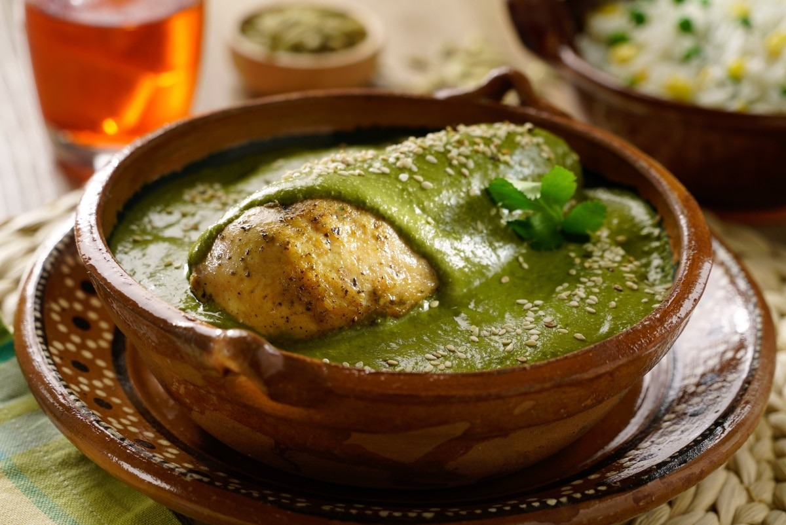

Primero asa los pimientos al fuego directo, volteándolos con mucho cuidado (utiliza unas pinzas para esto), hasta que comiencen a ponerse negros por todos lados. Después guárdalos dentro de una bolsa de plástico y tápala con un trapo de cocina. Déjalos reposar durante 20 minutos y después quítales toda la piel quemada; ábrelos y quítales semillas y colita. Reserva los trozos de pimiento asado, los utilizarás después.
Antes de comenzar con la salsa, asegúrate de tener los jitomates, las cebollas y el ajo picados (no tienen que estar picados finamente, sólo en trozos pequeños).
En una olla a fuego medio, coloca la mantequilla y el aceite de oliva juntos. Cuando estén calientes, agrega cebolla y ajo. Acitrónalos hasta que la cebolla se ponga transparente (más o menos 3 minutos).
Agrega el jitomate en trozo y cocina a fuego medio durante 10 minutos, moviendo de vez en cuando.
Integra el tomillo, el orégano, la paprika, el Caldo De Tomate Knorr®100% Natural En Polvo y la pimienta. Deja que se cocine durante 5 minutos más, hasta que el jitomate se desintegre. Cuando esté listo, retira del fuego y deja que se entibie durante al menos 10 minutos a temperatura ambiente.
Mientras, cuece el espagueti en agua hirviendo. Tardará aproximadamente ocho minutos en estar lista (suave pero aún firme por fuera). Cuando el espagueti esté al dente, cuélalo pero conserva el agua de cocción, pues la utilizarás después.
Cuando la mezcla de jitomate esté tibia, vacíala en la licuadora o en el procesador de alimentos. Añade los pimientos, la leche y la crema. Licua o muele todo durante varios minutos hasta que esté completamente molido y uniforme.
Regresa la olla a fuego bajo y vacía la salsa que acabas de licuar (si quieres, puedes colarla antes para quitarle restos de piel y semillas del jitomate). Deja que se cocine a fuego bajo durante 10 minutos o hasta que empiece a soltar hervor.
Cuando haya soltado hervor y veas que la salsa está espesa, agrega el espagueti y media taza de agua de cocción de la pasta. Con mucho cuidado integra bien todo y retira del fuego.
¡Listo! Este espagueti rojo extra cremoso está listo para disfrutarse inmediatamente. Sírvelo con un poco de queso fresco rallado encima y un par de hojas de albahaca fresca para decorar.
Mole verde

INGREDIENTES:
1/2 tazas de pepita, de calabaza, sin cáscara y sin sal
100 gramos de almendra, peladas y tostadas
4 chiles poblanos, asado y desvenado
1 chile cuaresmeño, asado y desvenado
500 gramos de tomate verde, asado
1/2 cebollas blancas, asada
1 diente de ajo
2 cucharadas de aceite
2 cucharadas de Knorr Suiza caldo de pollo
6 pechugas de pollo, sin hueso y sin piel
PREPARACION:
Licuar las pepitas con las almendras y un poco de agua hasta formar una pasta homogénea. Reservar.
Licuar los chiles (poblano y cuaresmeño) con los tomates, cebolla y ajo, añadir la mejor cantidad de agua posible.
Calentar el aceite y verter los tomates licuados. Cocinar a fuego medio bajo por 12 minutos o hasta que tome un tono verde opaco.
Una vez sazonados los tomates, verter las pepitas molidas y cocinar a fuego bajo sin dejar de mover hasta integrar.
Añadir Knorr® Suiza Caldo de pollo y dejar cocinar a fuego bajo hasta que el aceite se vea en la superficie. Rectificar sazón.
Bañar cada pechuga de pollo caliente con el mole verde y servir.
Arroz amarillo
INGREDIENTES:
1.-3 cucharadas de aceite de oliva
2.-3 dientes de ajo picados
3.-2 tazas de arroz
4.-4 cucharaditas de curry en polvo
5.-3 ½ a 4 tazas de agua
6.-1 cucharadita de sal
PREPARACION:
Poner a calentar el aceite en una olla ancha a fuego medio alto.
Freír la cebolla y el ajo, cocinar hasta que estén blandos (unos 5 minutos).
Incorpora el arroz seco y el curry en polvo para que el arroz pueda cocinarse en el aceite.
Esparcir los ingredientes por toda la cacerola y deja que se cocinen durante hasta 5 minutos a la par que se revuelve con frecuencia, hasta que el arroz adquiera un tono perlado.
Añadir el agua y la sal, revolver todos los ingredientes para mezclarlos. Probar el agua para rectificar la sal
Calentar hasta que hiervan el agua con el arroz a fuego alto para que la mezcla se cocine sin taparla y sin revolverla.
Monitorear el progreso del arroz revisándolo cada cierto tiempo.
Bajar el fuego cuando la superficie del arroz tenga una apariencia seca y salga vapor por unos agujeros pequeños.
Tapar la olla y seguir cocinando a fuego lento. durante 15 minutos más sin revolver ni destaparla durante este tiempo.
Bajar de la hornilla, destapar la olla para que salga el vapor, dejar reposar por unos 5 minutos.
Revolver con un tenedor para soltar el arroz y servir.
Gelatina de gansito
INGREDIENTES:
3 Gansitos
10 g Grenetina (4 cucharadas)
Tazas de agua (1)
370g Leche condensada
370 g Leche evaporada
Leche entera (1 taza)
Aceite de oliva
molde grande
PREPARACION:
Tomamos el agua y la vertemos en un tazón, la calentamos e hidratamos en ella la grenetina. La dejamos hidratar de 5 a 8 minutos.
Por lo mientras, vamos a engrasar el molde para gelatina con un poco de aceite de oliva (de preferencia en spray). Idealmente, hay que procurar que el molde que sea de esos moldes con forma de corona para gelatina.
Como Hacer Gelatina De Gansito 1
En un cazo o en una olla pequeña para preparar la gelatina, vamos a vertir la lata de leche evaporada y la leche condensada junto con la leche normal. Vamos a revolver muy bien con una cuchara para que queden todos los ingredientes bien incorporados.
Cuando esté lista la mezcla, la llevamos a fuego unos 5 minutos, sin dejar de remover para que no se pegue. Es muy importante que no se llegue a hervir la leche.
Una vez que esté hidratada la gelatina, la vertemos en nuestra mezcla de tres leches. Hazlo cuando la leche esté aún caliente, pero con el fuego apagado. Vamos removiendo poco a poco para que se integre bien.
Tomamos el molde engrasado y vertimos sólo una taza de la preparación de tres leches. Cubrimos el fondo del molde con una altura de 1 a 2 centímetros. Una vez que esté listo, esperaremos a que la gelatina esté a temperatura ambiente y llevamos el molde al refrigerador para que comience a cuajar. La dejamos enfríar unos 20 minutos.
Es importante que la gelatina no vaya a cuajar completamente, pero sí debe de tener una consistencia ya suficientemente densa para que podamos colocar los gansitos. Para que te sea más sencillo colocarlos en el molde, puedes cortar los gansitos a la mitad.
Una vez que tengamos colocados los gansitos, rellenamos con otra taza de gelatina, para que los gansitos queden firmes. Lo refrigeramos por 15 minutos.
Por último, con el resto de la mezcla de gelatina de tres leches terminamos de cubrir el resto del molde. Llevamos de nuevo el molde al refrigerador y lo mantendremos al menos 4 horas.
Una vez que pase el tiempo, desmonta la gelatina de gansito y, si gustas, puedes espolvorear con un poco de chispas de chocolate, mermelada de fresa o jarabe de chocolate.¡A disfrutar!
Pay de limon
INGREDIENTES:
2 paquetes de galleta María
1 lata de leche evaporada
1 lata de leche condensada
6 limones
1 barra de queso crema<
PREPARACION:
Exprime los limones para obtener jugo de limón sin semillas.
Licúa la leche evaporada con la leche condensada , el queso crema y el jugo de limón hasta que quede una crema.
En un recipiente coloca una de base galletas Marías y agrega la mezcla anterior. Continúa haciendo capas de galletas con de la mezcla hasta llegar al tope del recipiente.
Decora con trocitos de galletas y rodajas de limón.